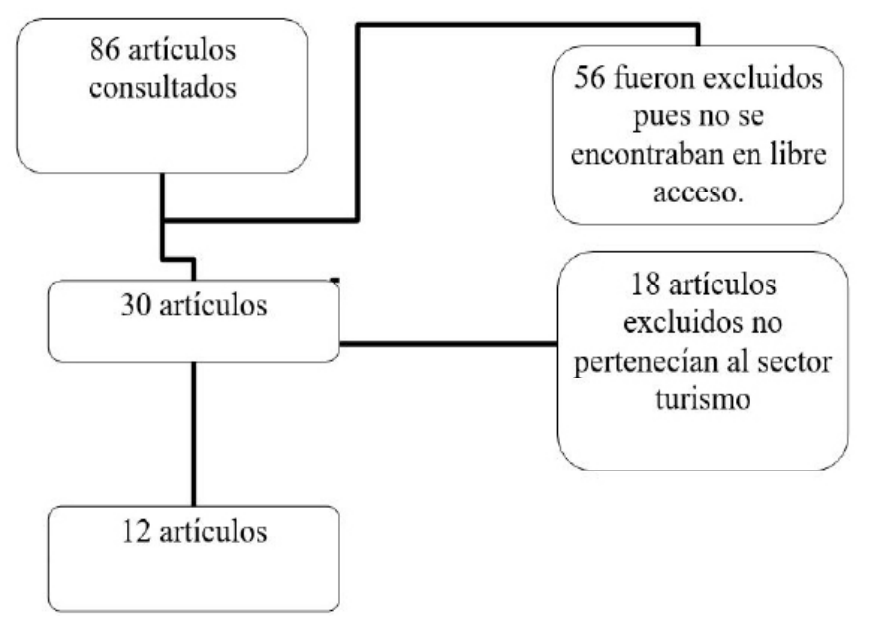
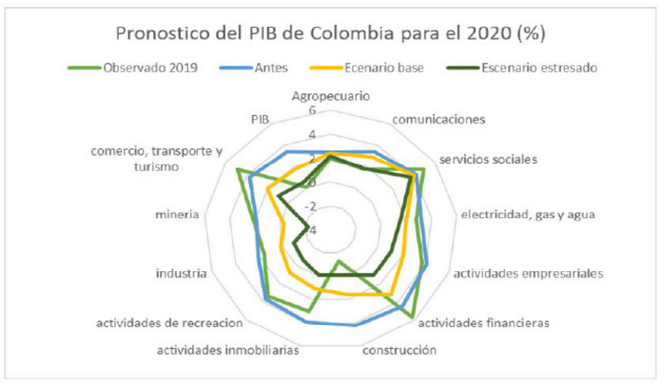
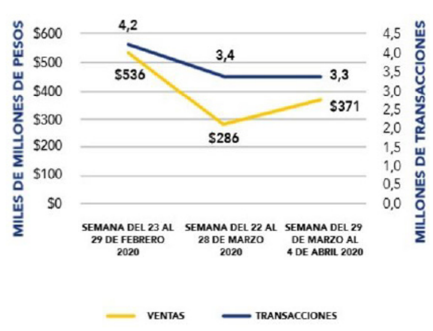
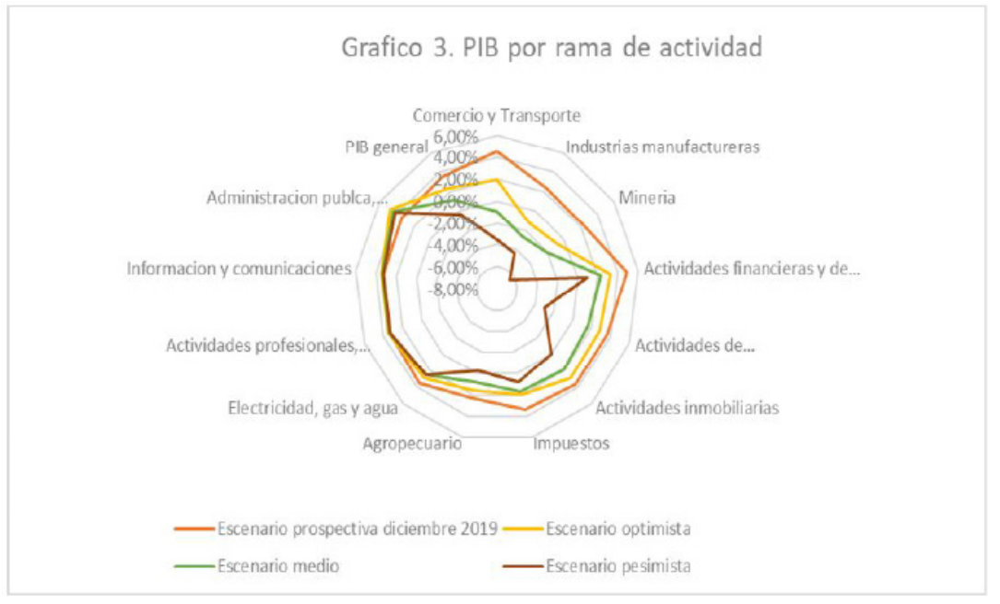

Introducción
La reciente crisis por la epidemia mundial de
coronavirus ocasionará efectos importantes
en la economía global durante los primeros
trimestres de 2020. Aunque todavía es
muy pronto para evaluar los alcances de la
enfermedad y sus efectos en la economía, se
muestran algunas de las posibles implicaciones
y medidas políticas que diversos especialistas
e instituciones financieras han vertido sobre
el tema. La pandemia de COVID-19 está
afectando negativamente a la economía
global y parece que sus efectos se mantendrán
al menos durante los dos primeros trimestres
de 2020. Representa una emergencia para la
salud pública e implica un choque económico
tanto de oferta como de demanda; es decir,
que está afectando tanto a productores como
a consumidores. A nivel mundial, la pandemia
del coronavirus COVID-19 podría ocasionar
que la economía mundial se reduzca un 0,9%
durante el 2020, en vez de crecer hasta el 2,5%
como se preveía, destaca una nota informativa
del Departamento de Asuntos Económicos y
Sociales de la ONU (López, 2020).
La comisión económica para América latina y
el caribe estima una contracción de -1,8% del
producto interno bruto regional, lo que podría
llevar a que el desempleo en la región suba
en diez puntos porcentuales. Esto llevaría a
que, de un total de 620 millones de habitantes
(América latina y el caribe), el número de
pobres en la región suba de 185 a 220 millones
de personas; en tanto que las personas en
pobreza extrema podrían aumentar de 67,4 a
90 millones. (CEPAL,2020).
La crisis que está generando el COVID-19
afecta a todos los sectores especialmente el
turismo, pues ha ocasionado que muchos de
los planes turísticas que ya se encontraban
planeados para la población en general
fueran cancelados o aplazados para fechas
indeterminadas ocasionando que este sector sea el más perjudicado, teniendo en cuenta
que no ha recibido ningún tipo de ingreso
por más de tres meses consecutivos, haciendo
que pequeñas y medianas empresas se vean
en la obligación de suspender contratos
indefinidamente hasta nueva orden. Esta
pandemia ha puesto en jaque a grandes
cantidades de empresarios que están
tratando de salir a flote, pues no solo son las
agencias de viajes, es un conjunto de hoteles,
restaurantes, guías y demás trabajadores que
directa o indirectamente se benefician de este
sector, y que lo ven como un medio de trabajo
sustentable hasta este momento, provocando
que el país se encuentra aún más sumergido en
la pobreza y el PIB caiga de la misma manera
(Pulido Arbelaez &Cabello Beltrán, 2020)
Por ello se hace necesario determinar cuál
será el impacto que el COVID-19 tendrá
para el sector turismo en el país, describir las
medidas que el gobierno nacional ha tomado
para contrarrestar la crisis y que propuestas
innovadoras hechas por expertos se pueden
implementar como medida de contingencia
en la crisis.
Materiales y métodos
La investigación se desarrolló por medio de una
revisión bibliográfica en la cual, críticamente,
se analizaron los datos relacionados con el
fenómeno de interés después de realizar una
búsqueda en las principales bases de datos
nacionales e internaciones, mejorándola a
través de palabras claves como COVID-19,
crisis económica, sector turismo.

Figura 1: selección de artículos
Fuente: Propia
Resultados y análisis
El impacto del COVID-19 a nivel nacional.
En Colombia se esperaba para este 2020 la economía aumentará 3,2%, debido a que todo
indicaba que la economía sería similar a la del 2019, aunque el panorama ahora es totalmente
contradictorio, en el mejor de los casos si la pandemia se controla en uno o dos meses se prevé
que la economía colombiana crecerá un 2,3%, en un término a medio plazo (4 meses) se prevé
que la economía crecerá 1,2% sin embargo en el peor de los panoramas si se resuelve a un
plazo mayor a 6 meses se prevé que el crecimiento será un 0,4% y a la baja. (Fedesarrollo, 2020).
El pronóstico del PIB de Colombia para el 2020 en porcentaje de acuerdo a la ANDI durante el
escenario de la pandemia mundial se observa que todos los sectores se espera que se encuentren
a la baja frente al 2019, pero habrá algunos sectores mucho más golpeados que otros, sectores
como actividades financieras, actividades empresariales, actividades inmobiliarias, actividades
de recreación, minería, industria y comercio, transporte y turismo se encuentran muy por
debajo del escenario del escenario observado en 2019, sin embargo existe un sector el cual se
prevé crecimiento y es el sector agropecuario. (Figura 2)

Figura 2. Pronostico del PIB de Colombia para el 2020 (%)
Fuente: Propia, datos tomados de la ANDI
El ingreso de los colombianos ha caído alrededor
en 5,8 billones de pesos en marzo y abril
por cuenta de las medidas para enfrentar el
coronavirus, según cálculos de Anif. Esta entidad
advirtió que dicha cifra podría aumentar hasta los
12,5 a 26,9 billones (1,1 a 2,4 como porcentaje del
PIB) en caso de que el aislamiento permanezca
hasta mayo o junio. En ese caso, cada mes
representaría menos ingreso laboral por el orden
de 14,5 billones adicionales, lo que conlleva a que
menor ingresos por parte de los colombianos,
menos demanda.
En el mes de marzo, las ventas a través
plataformas electrónicas cayeron 13,8%, según
datos de la alianza Fenalco-CredibanCo, Mientras
los pagos electrónicos para comprar alimentos
en supermercados y grandes cadenas crecieron
79%y las droguerías repuntaron 29%, las compras
de pasajes aéreos presentaron un desplome del
68%. Las de vestuario cayeron 48% mientras que
las de estaciones de servicio lo hicieron un 8,49%.
(Instituto Belisario Domínguez, 2020).
La Cámara Colombiana de Comercio Electrónico y
el Ministerio de las TIC, junto con algunas empresas
afiladas al gremio, han recopilado información
para entender cómo se ha comportado este
segmento de la economía digital en Colombia
durante la pandemia. Respecto a la última
semana de febrero, el valor total de las compras
realizadas y pagadas a través de internet en
Colombia cayó el 47% en la última semana de
marzo, aunque presentó un crecimiento semanal
del 29% en la primera semana de abril, una vez
se dio claridad por parte del Gobierno Nacional
en la operación de las plataformas de comercio
electrónico en medio del aislamiento preventivo
obligatorio. (CCCE, 2020).

Figura 3. Transacciones electrónicas en el comercio nacional
Fuente: Credibanco, Redeban y ACH
El confinamiento obligatorio y la pérdida
de empleos, especialmente en el sector
informal, se traduce además en un choque de
demanda, en donde los hogares reducen sus
niveles de consumo. Este choque de demanda
se agrava con la reducción en el ingreso
disponible del país derivada de la caída en
los precios internacionales del crudo, que
profundiza la reducción del consumo público
y privado. Esto último se vería reflejado en
un menor dinamismo en sectores como
el comercio, transporte, alojamiento y
servicios de comida, actividades financieras,
actividades de entretenimiento, y la industria
manufacturera. En ese sentido, por el lado
de la oferta el choque afectaría en mayor
medida al sector de comercio y transporte
(-0,9% escenario medio vs +4,5% escenario
Prospectiva), la industria manufacturera
(-2,6% medio vs 2,4% en Prospectiva), este
último especialmente en las actividades de
refinación que se desacelerarían en 7,7%
frente al escenario base de Prospectiva (-4,2%
medio vs +3,5% base); y el sector de la minería,
que también vería reducido su generación
de valor agregado al contraerse en 2,1% (vs
+2,3% en Prospectiva) obedeciendo al menor
dinamismo en la actividad de extracción
petrolera. (Fedesarrollo, 2020). (Figura 4)

Figura 4. PIB por rama de actividad
GrapFuente: h1propia
Medidas tomadas por el gobierno Nacional
para afrontar la emergencia económica.
El gobierno nacional ha tomado medidas
mediante decretos para poder proteger
sus sectores financieros y que el PIB no se
tan devastador para la economía del país
y de la misma manera esta pueda resurgir,
dentro de estas medidas se encuentra la
del decreto 462 del 22 de marzo del 2020
en donde se prohíbe la exportación y
reexportación de productos necesarios para
la confrontación de la pandemia, en donde
el sector agropecuario solo producirá para
abastecer a la nación, creando un situación
autosostenible como factor principal para las
necesidades primordiales de los colombianos.
(MinCIT,2020).
Dentro del sector turismo el gobierno en su
decreto 397 del 13 de marzo del 2020 establece
un beneficio en la presentación y pago de la
contribución parafiscal para la promoción del
turismo hasta el 17 de junio del 2020, teniendo
en cuenta que estos deben ser pagados por
entidades en donde el sector económico
sea netamente el turismo, sin embargo, esta
situación no ha sido bien vista, puesto que solo
es un plazo para la contribución del mismo
más no una baja, ya que el sector turismo
es uno de los más afectados, y que seguirá
viéndose afectado al menos durante el 2020.
(MinCIT,2020)
Sin embargo, en el decreto 557 del 15 de abril
del 2020, se establece que los recursos de
impuesto nacional con al turismo artículo 4 la
Ley 1101 2006, se destinarán para contribuir
a las empresas turísticas que cuenten con
inscripción y vigente en el Registro Nacional
Turismo y no para la promoción del mismo, lo
que favorece directamente a Mundidestinos
S.A. (MinCIT,2020)
También, el gobierno nacional en el Decreto
417 del 17 de marzo de 2020 establece que
se podrán incluir disposiciones que flexibilicen
los plazos de pago de las obligaciones, pagos
a los acreedores distintas clases de forma
simultánea o sucesiva y mecanismos alivio
financiero y reactivación empresarial, en
donde se destinarán 14,8 billones de pesos
para la reactivación empresarial con el fin de
mitigar los efectos financieros en las medianas
y pequeñas empresas debido a la emergencia
sanitaria, respaldando los programas de
garantías crediticias. (MinCIT,2020)
Propuesta innovadora
Una de las opciones del sector turismo es el
proceso de innovación el cual podrá surgir
según expertos en la materia a finales del 2020
y en su auge en 2021, en donde sin duda, el
turismo interno será el primero en empezar
su recuperación, por eso es importante la
implementación de una campaña que incentive
a los colombianos a recorrer nuevamente
su país. Además, las ciudades turísticas de la
nación impondrán medidas de seguridad y
salubridad para que los colombianos puedan
sentirse protegidos por las agencias de viajes
en el entorno de la salud, retomando la
confianza de los turistas.
Además, podría existir una alianza con las
secretarias municipales, departamentales y
nacionales de turismo, en donde ellos con
alianzas con el gremio hotelero promocionan
a las agencias de viajes planes con precios
bajos o innovando con las noches de hotelería
dando una noche gratis por cada dos noches,
para que el turismo este más al alcance de los
colombianos, teniendo en las ganancias netas
disminuiría pero podría existir mayor demanda
por parte de los colombianos con medianos
ingresos, aumentando el PIB por la cantidad
de planes turísticos vendidos.
Conclusiones
En definitiva, esta pandemia ha dejado
a casi todas las ramas de actividad de la
nación perjudicadas, especialmente al sector
turismo, en donde se ha visto una disminución
contundente en el PIB de la nación incluso
algunos negativos, perjudicando a cada uno de
los trabajadores de estos sectores reduciendo
el flujo de caja en la nación pues al haber
menos ingresos en los hogares colombianos,
estos adquirirán en menor cuantía la oferta
que el mercado otorgue.
Referencias
- Altman, E.I. (1968), “Financial ratios, discriminant
analysis and the prediction of corporatefailure”,
Journal of Finance, Vol. 23 No. 4, pp. 589-609.
- Asociación Nacional de Empresarios en Colombia.
Publicaciones Económicas. Consultado el 01
de junio del 2020. Disponible en: http://www.andi.com.co/Home/Pagina/1049-normatividady-guias-de-orientacion-empr
- Cámara de Colombiana de Comercio Electrónico.
Impacto del COVID-19 sobre el comercio
electrónico en Colomba. Consultado el 01 de
junio del 2020. Disponible en: https://www.ccce.org.co/wp-content/uploads/2017/06/Informe-ImpactoCovid.pdf
- Comisión económica para América Latina y el
Caribe. Informes COVID-19. Consultado el
01 de junio del 2020. Disponible
en: https://www.cepal.org/es/publicaciones/informesCOVID19
- FMI (2020): “World Economic The Great
Lockdown”, Washington (abril). Disponible en: https://www.imf.org/en/publications/weo
- Federación de Desarrollo, centro de investigación
económica y social. Tendencias económicas.
Consultado el 01 de junio del 2020. Disponible
en: https://www.fedesarrollo.org.co/
publicacionesInstituto Belisario Domínguez
Senado De La República (2020). implicaciones
económicas de la pandemia por covid-19 y
opciones de política. consultado el 18 de junio
del 2020.
- Keynes, J. M. (1936) “Teoría General de la
ocupación, el interés y el dinero.” Traducción
Fondo de Cultura Económica. México. 1943
- López Laborda Julio. 2020. Consideraciones sobre
finanzas públicas y COVID-19: Bastantes
interrogantes y algunas certezas. Universidad
de Zaragoza y Fedea. Madrid- España.
consultado el 02 de junio del 2020.
- Ministerio de Comercio, Industria y Turismo,
Decreto 557 de 2020. Consultado el 02 de
junio del 2020. Disponible e n :
https://dapre.presidencia.gov.co/normativa/normativa/DECRETO%20557%20DEL%2015%20DE%20JUNIO%20DE%202020.pdf
- Ministerio de Comercio, Industria y Turismo,
Decreto 462 de 2020. Consultado el 02 de
junio del 2020. Disponible e n :
https://dapre.presidencia.gov.co/normativa/normativa/DECRETO%20462%20DEL%2022%20DE%20MARZO%20DE%202020.pdf
- Ministerio de Comercio, Industria y Turismo,
Decreto 397 de 2020. Consultado el 01 de
junio del 2020. Disponible e n :
https://dapre.presidencia.gov.co/normativa/normativa/DECRETO%20397%20DEL%2013%20DE%20MARZO%20DE%202020.pdf
- Surico, P. & Andrea Galeotti. (2020). The
economics of a pandemic: the case of Covid19. Wheeler Institute for Business and Development.
London Business School.
- Pulido Arbelaez L.N. y Cabello Beltrán E.A.
(2020). Análisis del impacto económico del
coronavirus en el sector turismo en Colombia
Ensayo académico para optar por el título de
Especialista en Administración Financiera.
Tesis de pregrado de la Universidad Católica de
Colombia